Archive / Solo exhibition
Fieldcast
- When
- 5—29 July 2017
- Venue
- Bus Projects · Collingwood
- Writing
- Katie Paine
- Publication
- Exhibition catalogue ↗
Exhibition statement
Fieldcast is a video and photographic installation that formalises both an expanded and compressed notion of landscape through a process of material force-work and camera-less photography. A pile of mineral samples, liquid metals, dust, slate, gold and gemstone shards were sculpted, scraped, mashed, liquefied and forced upon a hapless flatbed scanner to articulate textural dimensions through a controlled failure of the image making processes.
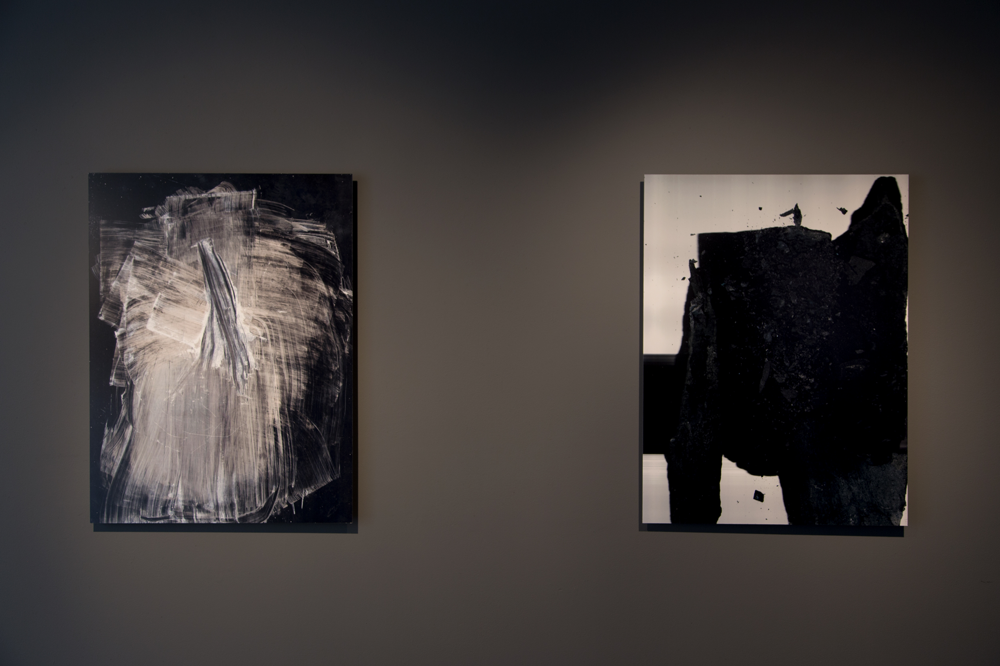
Artist statement
Material force-work.
Playing with inherent artefacts that occur when the imaging device is pushed way past intended limits, the resulting works resist the descriptive potential of photography and video to inform and locate the ‘where’ and ‘when’ of landscape. Instead what is offered is a shifted scale of vast territories, molecular energies and entropic disorder.
The work depicts time, space and place when the idea of the landscape is viewed in terms of pure matter. Objects float with a sense of shifting dimensionality, containing endless physical potential and mass, transmitting or receiving signals of unknown significance, referencing terrestrial/extra-terrestrial landscapes and mindscapes. Space sensed rather than understood.
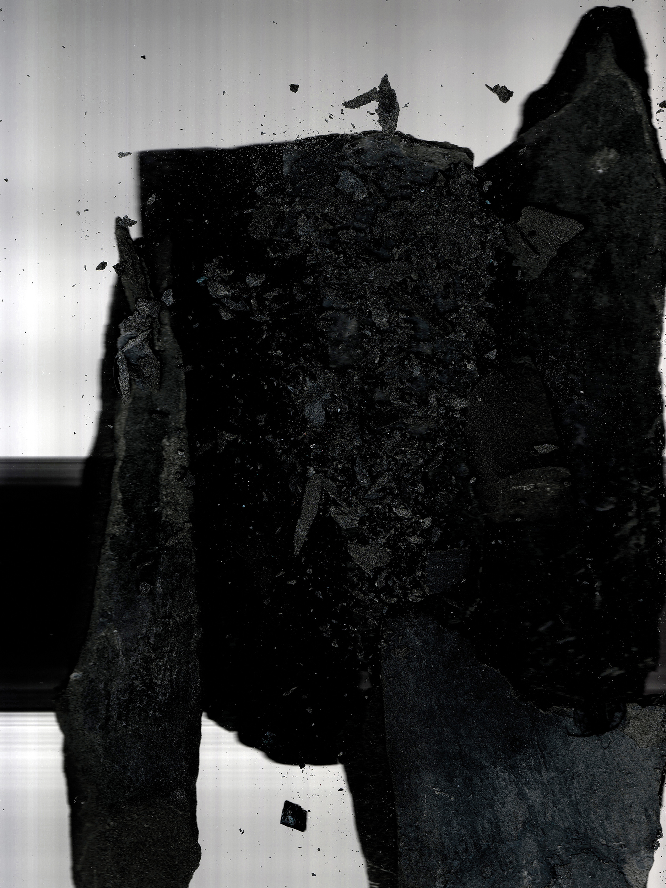
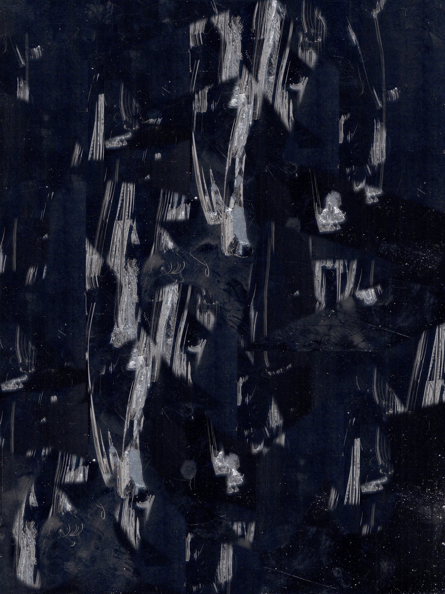
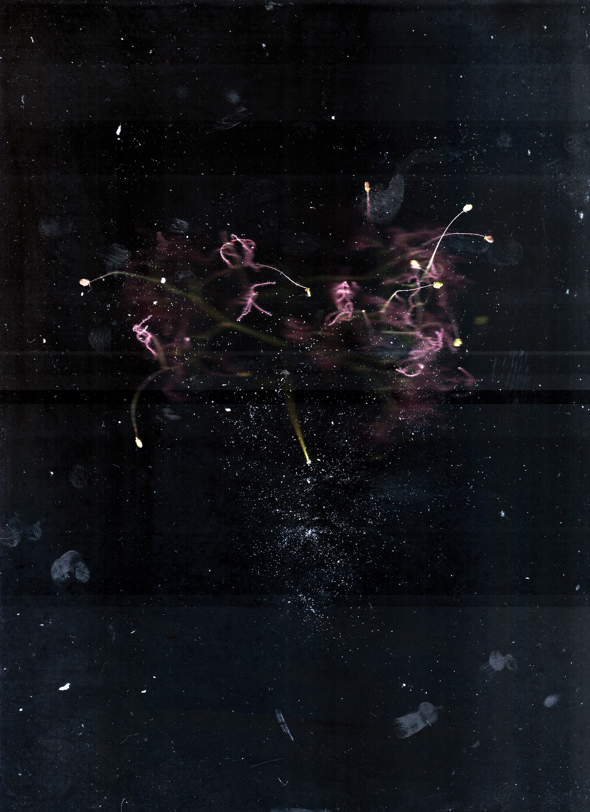
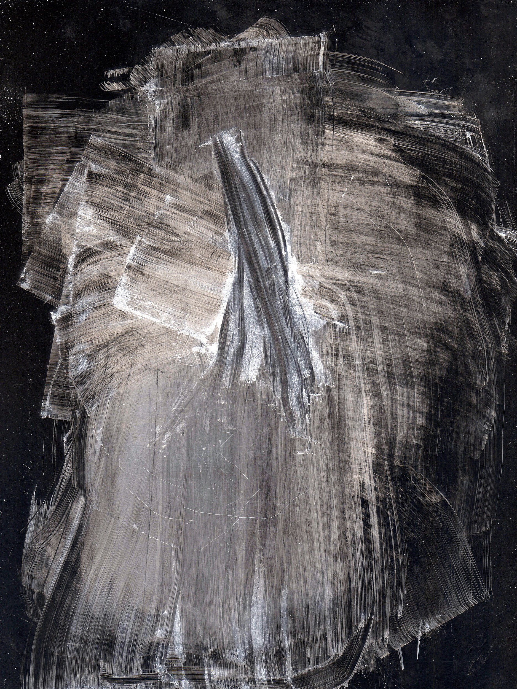
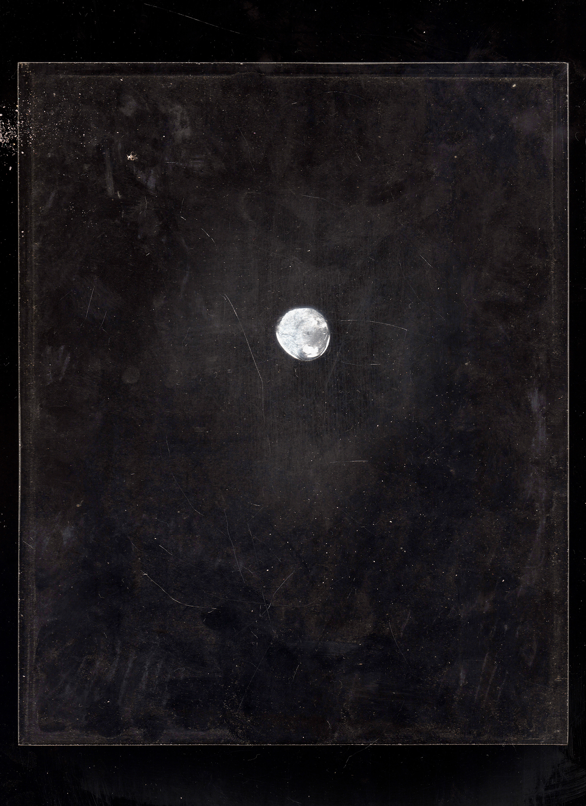
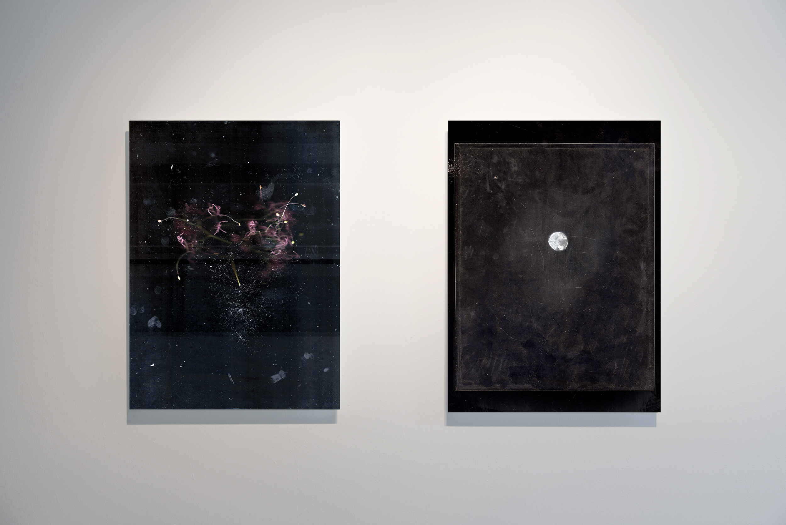
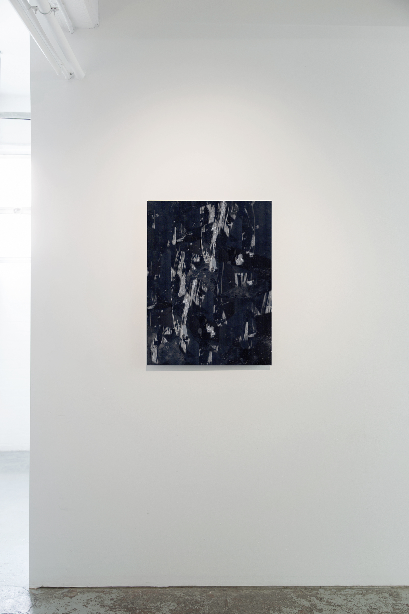
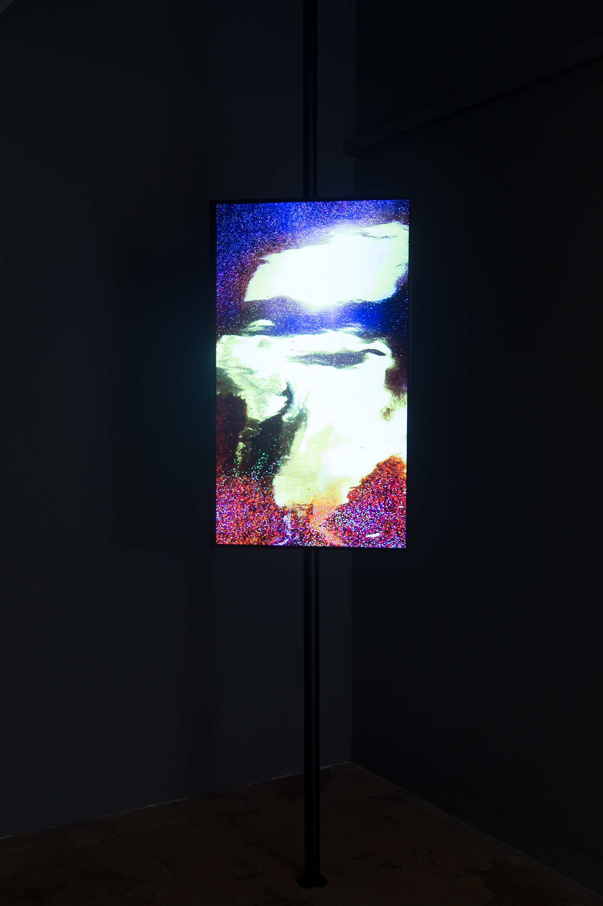
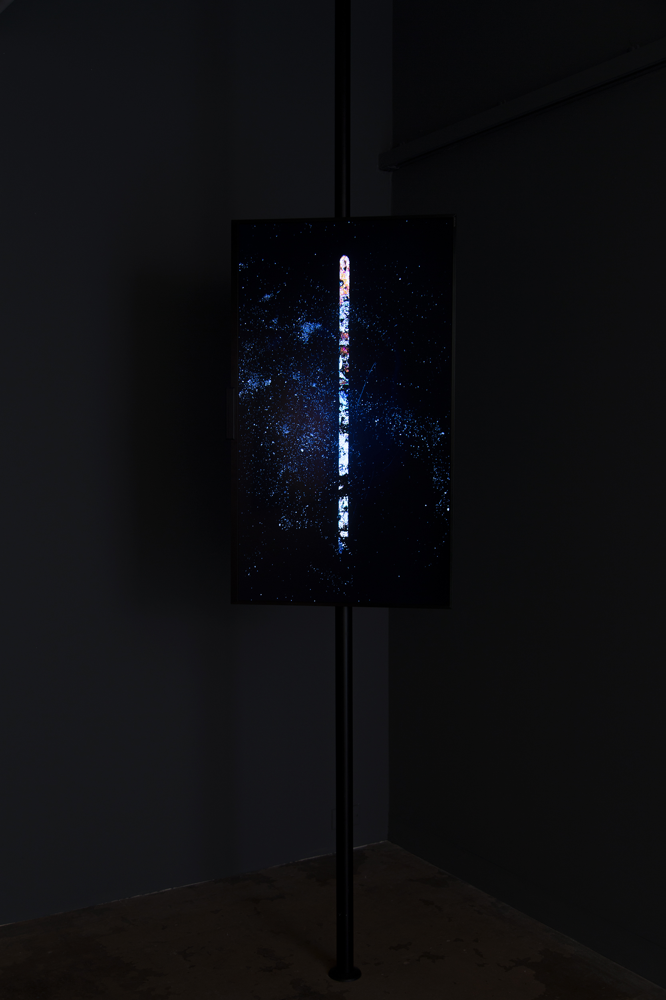
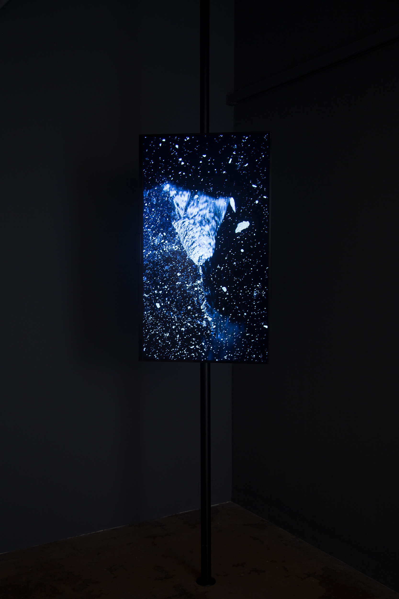
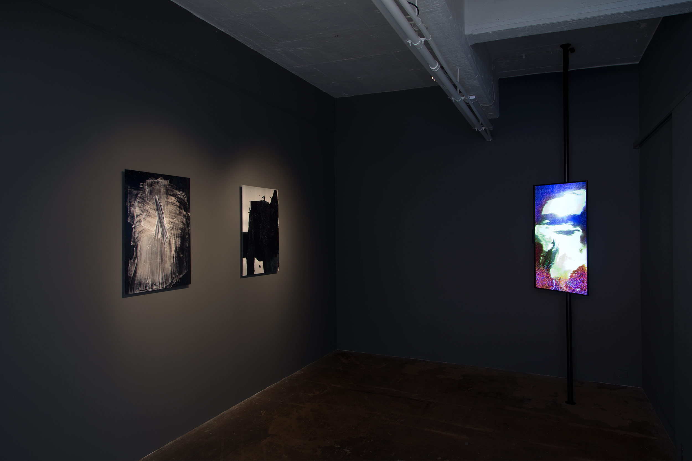

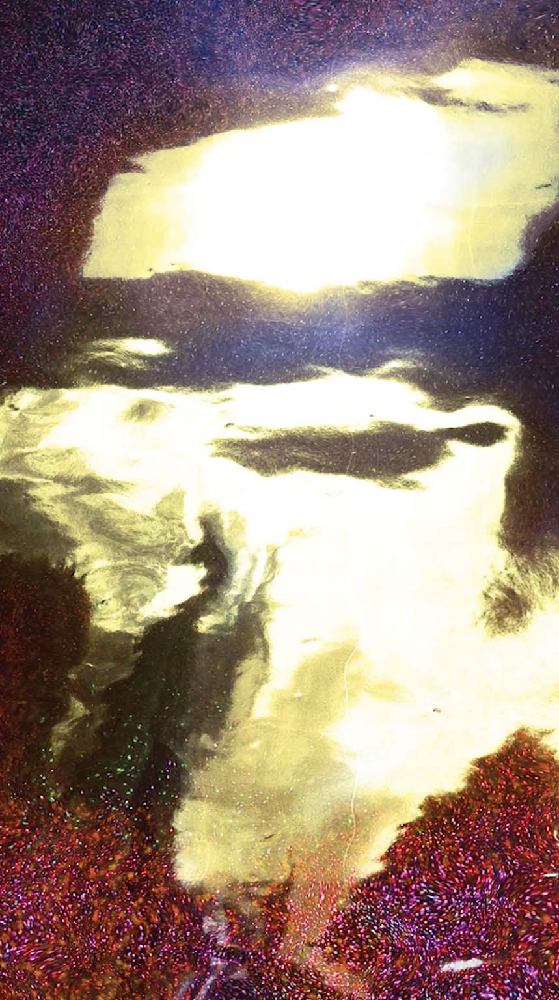
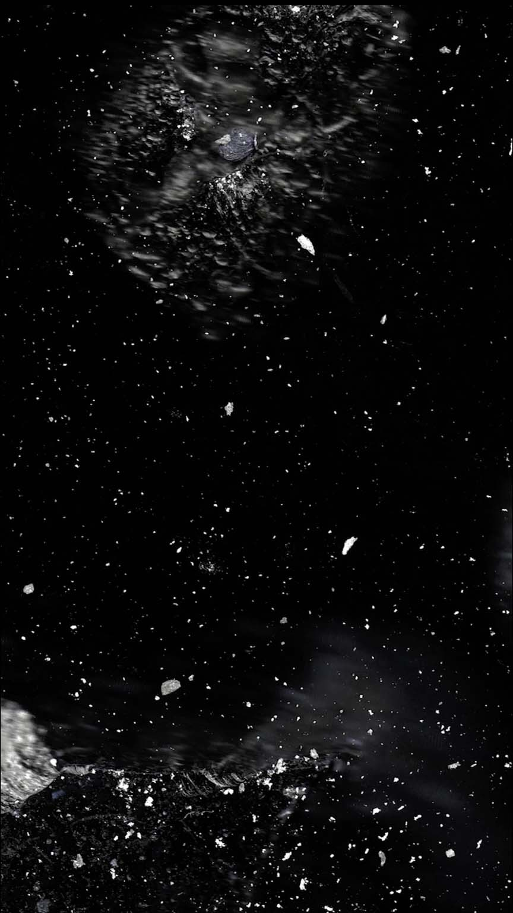